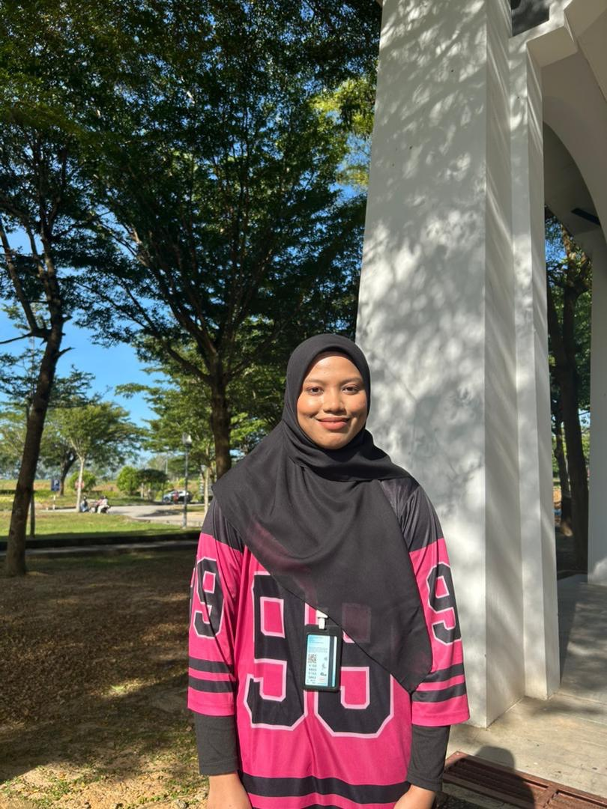
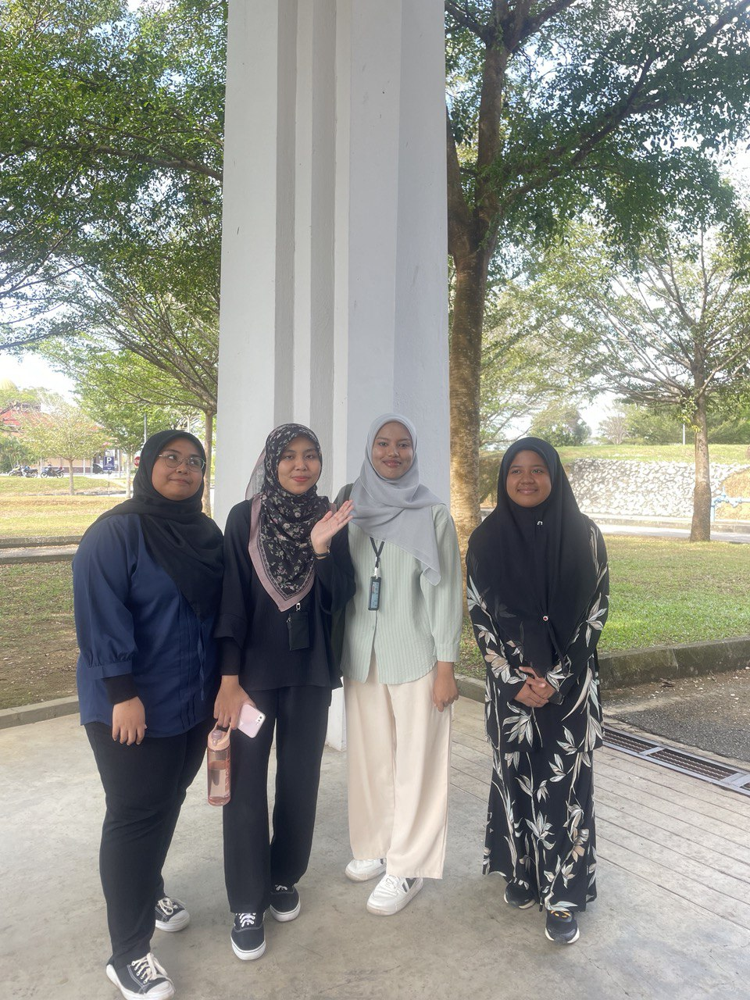
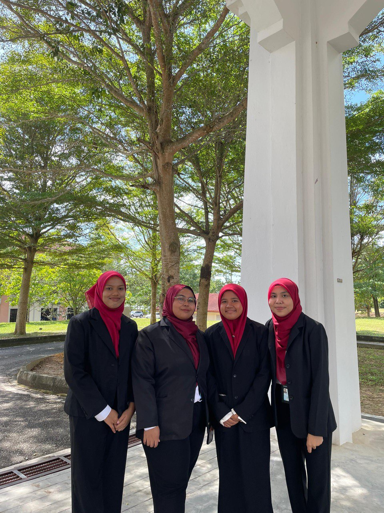
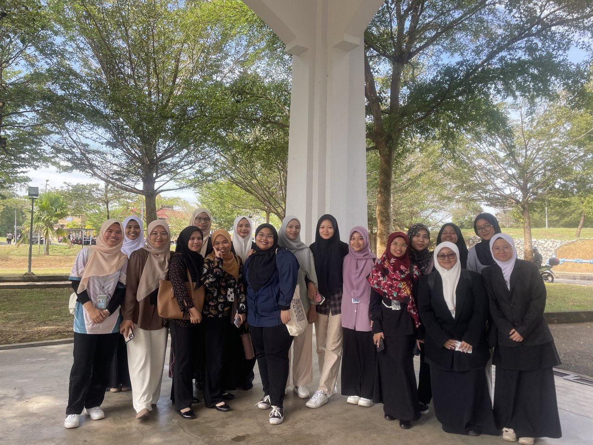
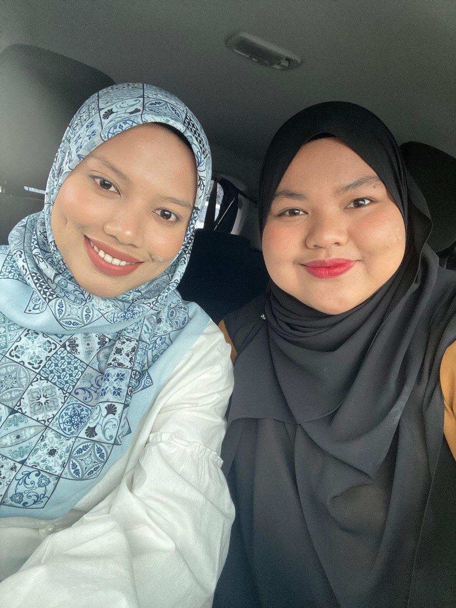
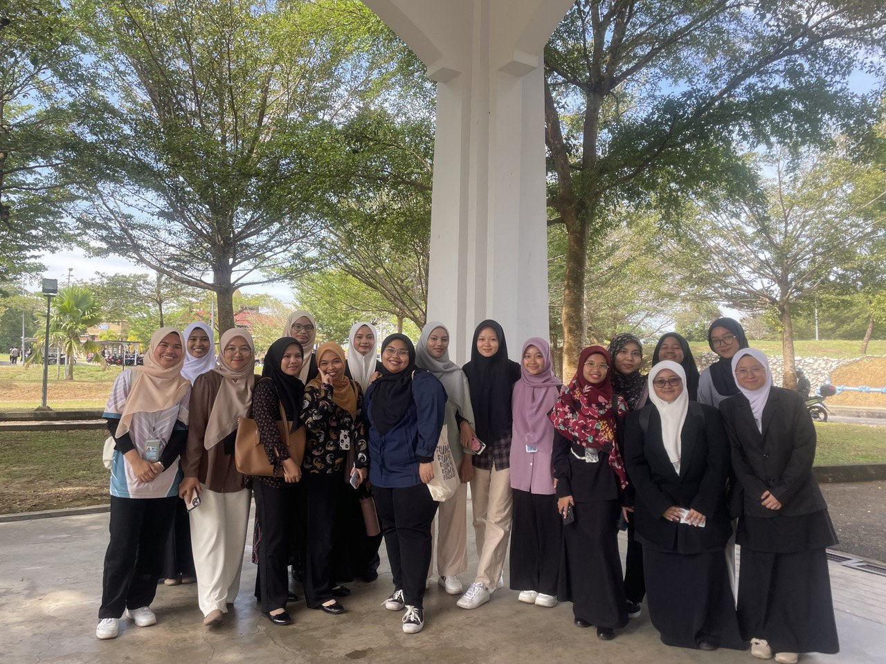
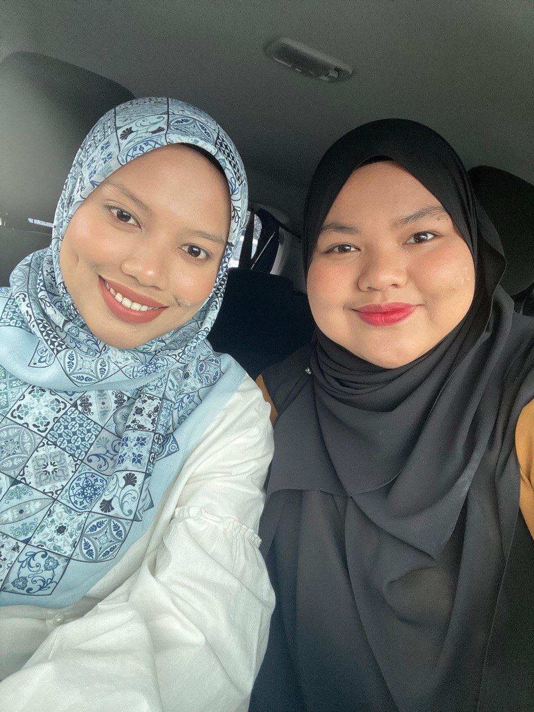
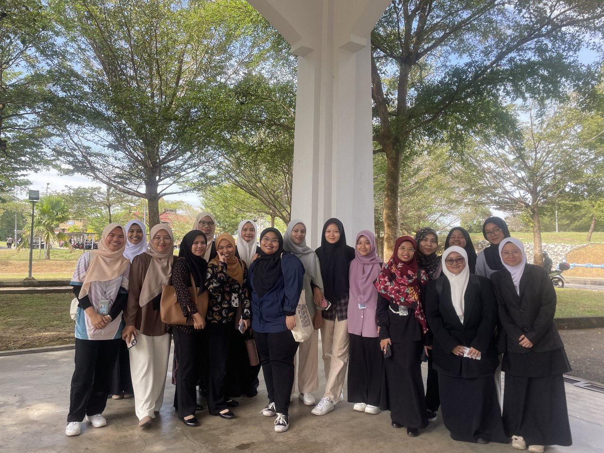
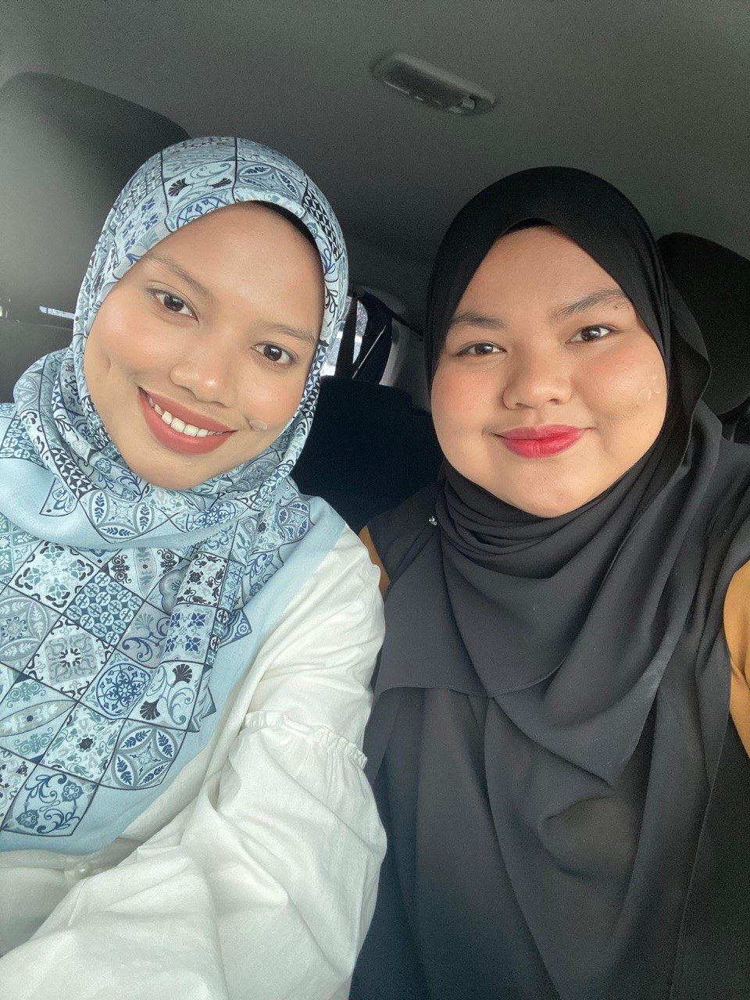

ABOUT ME

PERSONAL DETAILS
| Name | : Farah Najwa Binti Ghazali |
| Age | : 22 years old |
| Date of Birth | : 28 September 2003 |
| : farahnajwaghazali@gmail.com | |
| Phone | : 019-8141490 |
| Address | : Batu 3 Tandop, Alor Setar Kedah, Malaysia |
| Status | : Full-Time Student |
| Course | : Bachelor of Information Science (Hons.) Library Management |
About My Journey
I am an enthusiastic and motivated student passionate about information management, digital library systems, and knowledge organization. I enjoy exploring modern information tools, improving digital content, and participating in academic activities that enhance my skills. My goal is to gain strong hands-on experience through my internship next year.
My Gallery



 





"Success is the sum of small efforts, repeated day in and day out."